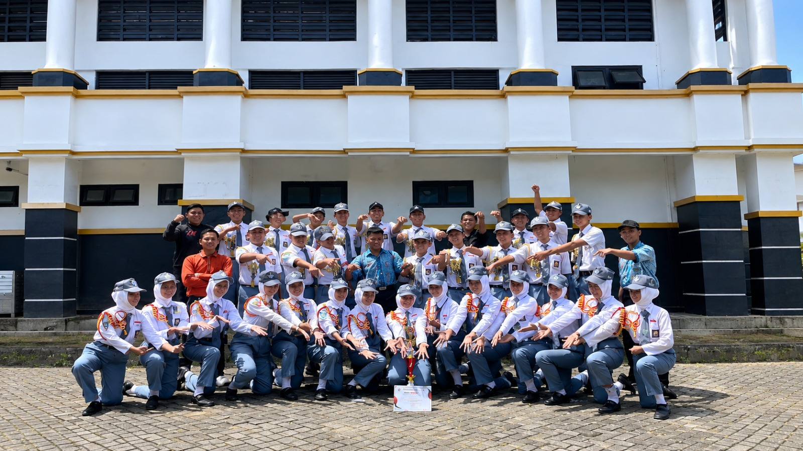
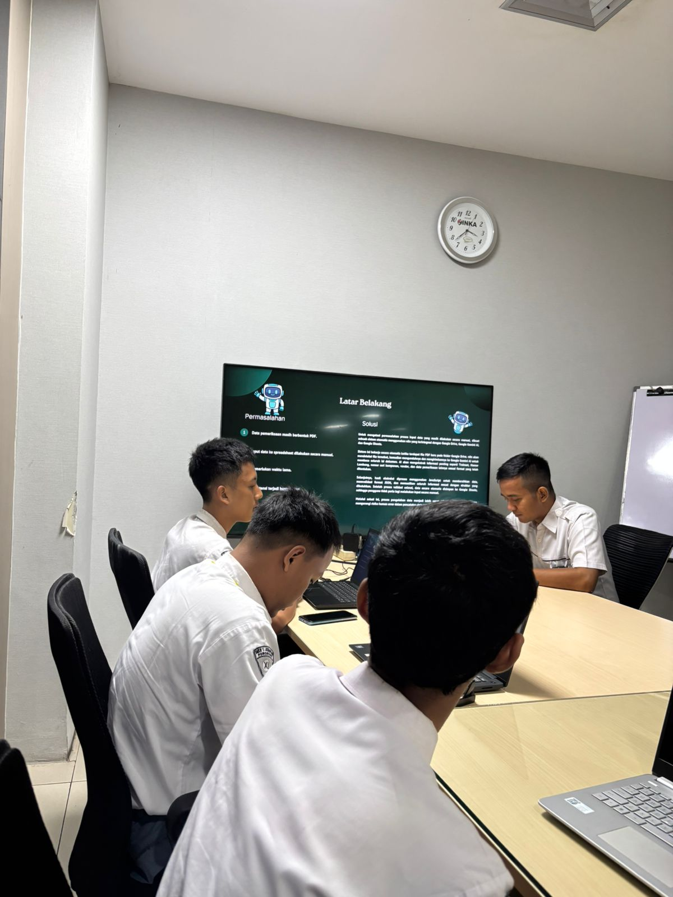
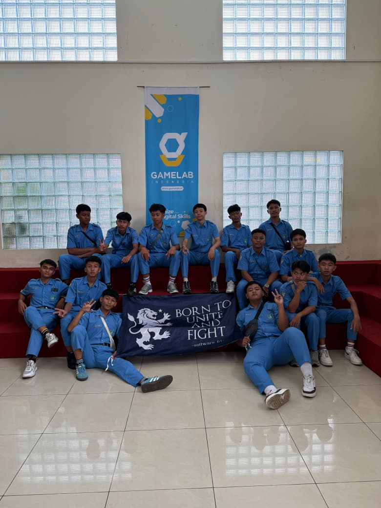

Ahmad Alvi Fauji
Web Developer, Data Analyst, dan Automation Enthusiast yang memiliki ketertarikan pada teknologi, pengembangan aplikasi web, pengolahan data, serta otomatisasi workflow.
Tentang Saya
Mengenal lebih dekat perjalanan dan ketertarikan saya di dunia teknologi.
👨💻 Siapa Saya?
Saya adalah Ahmad Alvi Fauji, seorang pelajar Rekayasa Perangkat Lunak yang memiliki ketertarikan terhadap dunia teknologi, pemrograman, dan pengembangan perangkat lunak.
Saya senang mempelajari bagaimana sebuah sistem dapat dibuat untuk membantu menyelesaikan permasalahan secara lebih cepat, terstruktur, dan efisien.
🚀 Fokus Saya
Saya memiliki fokus pada pengembangan website, pengolahan data, automation workflow, database, serta integrasi berbagai layanan digital.
Beberapa teknologi yang saya pelajari antara lain JavaScript, HTML, CSS, Supabase, Google Sheets, Looker Studio, n8n, REST API, Webhook, dan Artificial Intelligence.
Riwayat Pendidikan
💻 SMKN 1 Jenangan Ponorogo
Mengembangkan kompetensi di bidang Rekayasa Perangkat Lunak, pemrograman, pengembangan website, database, pengolahan data, dan teknologi digital.
📚 MTs
Melanjutkan pendidikan tingkat menengah serta mengembangkan kemampuan akademik dan organisasi.
🏫 Sekolah Dasar (SD)
Menempuh pendidikan dasar dan membangun fondasi pengetahuan serta karakter.
Pengalaman Saya
Beberapa pengalaman yang saya dapatkan selama belajar dan terjun langsung ke lingkungan industri.
PT Industri Kereta Api (INKA)
Saya melaksanakan Praktik Kerja Lapangan di PT Industri Kereta Api (INKA). Selama PKL saya mendapatkan pengalaman dalam pengolahan data, pembuatan dashboard, pengembangan website, serta otomatisasi workflow menggunakan n8n.
Gamelab Indonesia
Mengikuti kegiatan kunjungan industri ke Gamelab Indonesia. Kegiatan ini memberikan wawasan mengenai lingkungan kerja industri teknologi, proses pengembangan produk digital, serta penerapan teknologi dalam dunia kerja.
Kegiatan Saya
Beberapa kegiatan yang saya lakukan selama belajar, PKL, dan mengembangkan kemampuan di bidang teknologi.
Kegiatan PKL di INKA
Mengikuti kegiatan Praktik Kerja Lapangan di PT Industri Kereta Api (INKA), mulai dari pengolahan data, pembuatan dashboard, hingga pengembangan automation workflow.
Pengolahan & Analisis Data
Mengolah data menggunakan Google Sheets, membuat Pivot Table, serta menyajikan hasil analisis dalam bentuk dashboard menggunakan Looker Studio.
Belajar Workflow Automation
Mempelajari automation menggunakan n8n dengan Webhook, HTTP Request, JSON, API, dan integrasi Artificial Intelligence.
Pengembangan Website
Membuat dan mengembangkan website menggunakan HTML, CSS, dan JavaScript serta mempelajari responsive design dan validasi data.
Belajar Database & Supabase
Mempelajari penggunaan Supabase sebagai database, authentication, penyimpanan data, serta pengambilan data secara realtime.
Integrasi API & Webhook
Mempelajari cara menghubungkan berbagai layanan menggunakan REST API, Webhook, JSON, dan HTTP Request dalam sebuah workflow.
Gerak Jalan
Mengikuti kegiatan gerak jalan bersama sekolah. Kegiatan ini menjadi pengalaman untuk meningkatkan kedisiplinan, kekompakan, kerja sama, dan semangat kebersamaan.
Artikel & Cerita Saya
Cerita mengenai kehidupan, sekolah, organisasi, pengalaman PKL, dan perjalanan saya belajar teknologi.
Perjalanan Saya Menjadi Siswa RPL
Saya adalah Ahmad Alvi Fauji, seorang siswa Rekayasa Perangkat Lunak. Menjadi siswa RPL membuat saya mengenal lebih dekat dunia pemrograman, website, database, dan teknologi.
Pada awalnya saya masih belajar dari dasar. Saya mencoba memahami bagaimana sebuah program dibuat dan bagaimana sebuah website dapat bekerja.
Dari berbagai proses belajar tersebut, saya mulai menemukan ketertarikan pada pengembangan website, pengolahan data, dan automation.
Kehidupan Saya di Sekolah
Sekolah bukan hanya tempat untuk mendapatkan ilmu dari pelajaran. Bagi saya, sekolah juga menjadi tempat untuk belajar berteman, bekerja sama, bertanggung jawab, dan mencoba berbagai hal baru.
Selama bersekolah di SMKN 1 Jenangan Ponorogo, saya mendapatkan banyak pengalaman yang membantu saya berkembang sebagai seorang siswa.
Saya belajar bahwa setiap pengalaman di sekolah, baik di dalam kelas maupun di luar kelas, memiliki pelajaran yang dapat digunakan untuk menghadapi masa depan.
Pengalaman Berorganisasi
Selain belajar mengenai teknologi, saya juga mendapatkan pengalaman melalui kegiatan organisasi di sekolah.
Saya pernah mendapatkan pengalaman sebagai Ketua OSIS, mengikuti kegiatan Taruna, dan menjadi Ketua Dewan.
Dari organisasi saya belajar mengenai kepemimpinan, komunikasi, kedisiplinan, tanggung jawab, dan bagaimana bekerja sama dengan banyak orang.
Pengalaman tersebut menjadi salah satu bagian penting dalam perjalanan saya karena tidak semua hal dapat dipelajari hanya melalui pelajaran di kelas.
Perjalanan PKL di INKA
Salah satu pengalaman yang paling berkesan bagi saya adalah ketika mendapatkan kesempatan untuk melaksanakan Praktik Kerja Lapangan di PT Industri Kereta Api (INKA).
Pada awal PKL saya mengikuti basic training dan mulai mengenal lingkungan kerja. Saya kemudian belajar mengenai berbagai pekerjaan dan proses yang berkaitan dengan pengolahan data serta teknologi.
Selama PKL saya mempelajari pengolahan data menggunakan Google Sheets, Pivot Table, pembuatan dashboard dengan Looker Studio, hingga mulai mengenal workflow automation menggunakan n8n.
Dari pengalaman tersebut saya dapat melihat secara langsung bagaimana kemampuan yang dipelajari di sekolah dapat diterapkan dalam lingkungan industri.
Belajar Mengolah Data
Salah satu bagian dari perjalanan PKL saya adalah belajar mengolah data yang sebelumnya masih berupa data mentah.
Saya menggunakan Google Sheets untuk menyusun dan mengelola data. Setelah itu saya belajar menggunakan Pivot Table untuk membantu merangkum data.
Data tersebut kemudian saya tampilkan dalam bentuk dashboard menggunakan Looker Studio.
Dari kegiatan ini saya memahami bahwa data akan lebih mudah digunakan apabila disusun, diolah, dan disajikan dengan baik.
Mulai Mengenal Automation
Setelah mempelajari pengolahan data, saya mulai mengenal workflow automation menggunakan n8n.
Awalnya saya belajar memahami konsep workflow dan bagaimana setiap node dapat digunakan untuk menjalankan proses tertentu.
Saya kemudian mempelajari Webhook, HTTP Request, JSON, REST API, dan integrasi Artificial Intelligence.
Dari sini saya mulai memahami bahwa pekerjaan tertentu dapat dibuat lebih terstruktur dengan bantuan automation.
Belajar Membuat Website
Membuat website menjadi salah satu kegiatan yang saya sukai selama belajar RPL.
Saya mempelajari HTML untuk membuat struktur halaman, CSS untuk mengatur tampilan, dan JavaScript untuk membuat website menjadi lebih interaktif.
Saya juga mulai belajar mengenai database, validasi data, responsive design, dan bagaimana website dapat terhubung dengan layanan lainnya.
Perjalanan Saya Masih Panjang
Sampai saat ini saya masih terus belajar dan mencoba berbagai teknologi baru. Saya menyadari bahwa perjalanan untuk menguasai teknologi membutuhkan waktu, latihan, dan kemauan untuk terus mencoba.
Dari kehidupan sekolah, pengalaman organisasi, kegiatan PKL di INKA, hingga project yang saya kerjakan sendiri, semuanya menjadi bagian dari perjalanan saya.
Saya ingin terus meningkatkan kemampuan, membuat project yang lebih baik, dan mendapatkan pengalaman baru yang dapat membantu saya mempersiapkan diri menghadapi dunia kerja di masa depan.
Perjalanan ini masih panjang, dan saya masih memiliki banyak hal untuk dipelajari.
Project Yang Saya Kerjakan
Beberapa project yang pernah saya kerjakan selama belajar dan mengikuti kegiatan PKL.
n8n Automation Workflow
Membuat workflow automation menggunakan n8n untuk menghubungkan berbagai layanan dan proses digital. Workflow menggunakan Webhook, HTTP Request, JSON, API, dan AI.
BlueShop E-Commerce
Membuat website toko elektronik dengan fitur login, produk, keranjang, checkout, dan manajemen data. Sistem menggunakan Supabase sebagai database dan authentication.
Website Development
Mengembangkan website menggunakan HTML, CSS, dan JavaScript dengan tampilan responsive serta interaksi pada halaman website.
Sistem Data Gangguan Kereta
Project pengolahan data terkait gangguan kereta untuk membantu pencatatan, pengelolaan, dan penyajian informasi secara lebih terstruktur.
Dashboard Data Analysis
Membuat dashboard untuk menampilkan hasil pengolahan dan analisis data menggunakan Google Sheets dan Looker Studio.
AI & Data Automation
Mempelajari dan mengembangkan workflow yang menggabungkan Artificial Intelligence, pengolahan data, API, Webhook, dan automation untuk membantu menjalankan proses secara lebih terstruktur.
Keahlian Saya
Beberapa kemampuan dan teknologi yang saya pelajari.
Web Development
HTML, CSS, JavaScript, Responsive Design, dan pengembangan website.
Data Analysis
Google Sheets, Pivot Table, pengolahan data, dan Looker Studio.
Workflow Automation
n8n, Webhook, HTTP Request, JSON, REST API, dan automation.
Database
Supabase, database management, authentication, dan realtime data.
Artificial Intelligence
Integrasi AI dengan workflow, data processing, dan automation.
API Integration
REST API, Webhook, HTTP Request, JSON, dan integrasi layanan digital.
Pengalaman Organisasi
Pengalaman dalam kegiatan organisasi dan kepemimpinan.
Ketua OSIS
Mendapatkan pengalaman dalam memimpin organisasi, mengatur kegiatan, berkomunikasi, dan bekerja sama dengan anggota.
Kegiatan Taruna
Mengikuti kegiatan Taruna yang melatih kedisiplinan, tanggung jawab, kekompakan, dan kerja sama.
Ketua Dewan
Mendapatkan pengalaman dalam menjalankan tanggung jawab organisasi serta berkoordinasi dengan anggota.
Prestasi & Kegiatan
Beberapa kegiatan dan pengalaman yang menjadi bagian dari perjalanan saya di sekolah.

🏃 Gerak Jalan
Mengikuti kegiatan gerak jalan bersama sekolah. Kegiatan ini menjadi pengalaman untuk meningkatkan kedisiplinan, kekompakan, kerja sama, dan semangat kebersamaan.
Kegiatan Sekolah
Mengikuti berbagai kegiatan sekolah yang membantu meningkatkan pengalaman, kedisiplinan, tanggung jawab, dan kemampuan bekerja sama.
Galeri Pengalaman
Dokumentasi beberapa pengalaman dan kegiatan yang pernah saya ikuti.

📸 PKL di INKA
Dokumentasi pengalaman Praktik Kerja Lapangan di PT Industri Kereta Api (INKA).

📸 Kunjungan Industri Gamelab
Dokumentasi kunjungan industri ke Gamelab Indonesia.
📸 Gerak Jalan
Dokumentasi kegiatan gerak jalan bersama sekolah.